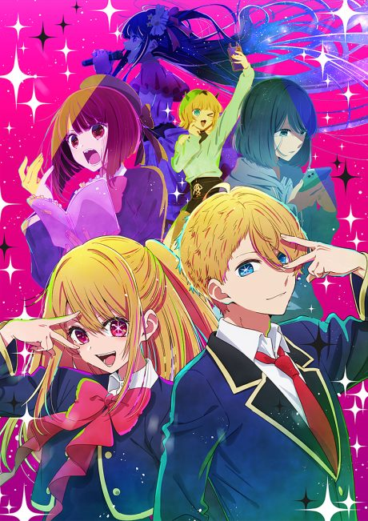
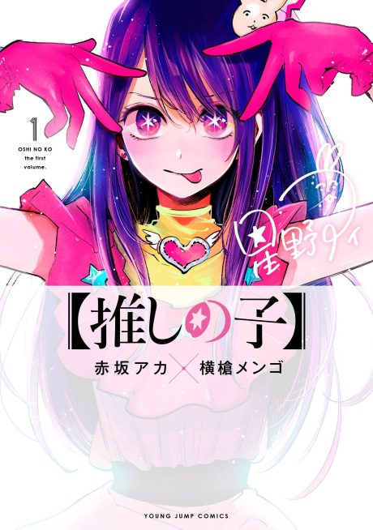

Oshi no Ko
【推しの子】
After the anime, read the manga from Chapter 127.
8.4AniList score
—Animeter, no votes yet
35episodes, 3 seasons
3 seasons, 35 episodes
In airing order. Episode numbers on this site count straight through every season, so season 2 starts at episode 12.
1
2023 · TV
OSHI NO KO
Episodes1–1111 ep
2
2024 · TV
OSHI NO KO Season 2
Episodes12–2413 ep
3
2026 · TV
OSHI NO KO Season 3
Episodes25–3511 ep
Sources: AniList